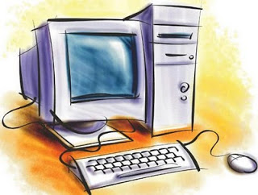
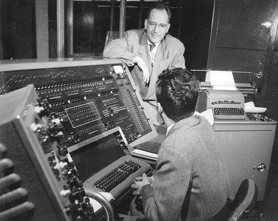
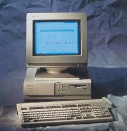
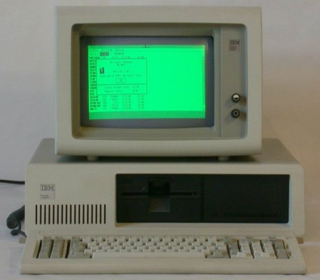
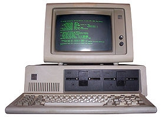
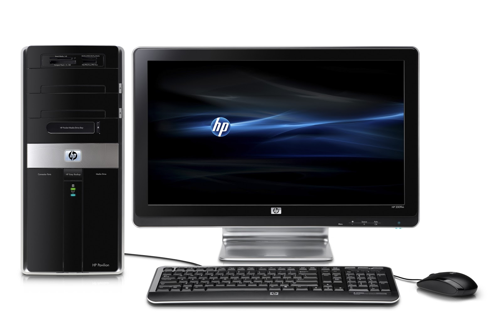

La informática, también llamada computación, es una ciencia que administra métodos, técnicas y procesos con el fin de almacenar, procesar
y transmitir información y datos en formato digital.
De esta manera, la informática se refiere al procesamiento automático de información mediante dispositivos electrónicos y sistemas
computacionales. Los sistemas informáticos deben contar con la capacidad de cumplir tres tareas básicas: entrada (captación de la información),
procesamiento y salida (transmisión de los resultados).
El conjunto de estas tres tareas se conoce como algoritmo.
No existe una definición consensuada sobre el término. Sin embargo, la Asociación de Docentes de Informática y Computación de la República Argentina han tomado una
posición, definiéndola de la siguiente manera:
"La informática es la disciplina o campo de estudio que abarca el conjunto de conocimientos,
métodos y técnicas referentes al tratamiento automático de la información, junto con sus teorías y aplicaciones
prácticas, con el fin de almacenar, procesar y transmitir datos e información en formato digital utilizando sistemas
computacionales. Los datos son la materia prima para que, mediante su proceso, se obtenga como resultado información.
Para ello, la informática crea y/o emplea sistemas de procesamiento de datos, que incluyen medios físicos (hardware)
en interacción con medios lógicos (software) y las personas que los programan y/o
los usan (humanware)."
Es por lo que se hace distinción entre este término y las ciencias de la computación, puesto que el segundo engloba la parte más teórica mientras que informática se refiere a la aplicabilidad de esta anterior en datos usando dispositivos electrónicos. De hecho se definen cinco subdisciplinas del campo de la informática: ciencias de la computación, ingeniería informática, sistemas de información, tecnología de la información e ingeniería de software.
Caracteristicas de la Informatica
La informatica a grandes rasgos, puede caracterizarse de la siguiente manera:
Su objeto de estudio puede resumirse en el tratamiento automatizado de la información mediante sistemas digitales computarizados.
Se propone tanto el abordaje teórico como el práctico de los sistemas informáticos, aunque no se trata de una ciencia experimental.
Toma en préstamo el lenguaje formal de la lógica y la matemática para expresar las relaciones entre los sistemas de datos y las operaciones que estos ejecutan.
Es una de las disciplinas científicas más jóvenes, surgida formalmente en la segunda mitad del siglo
La Información que generan sirve de apoyo a los mando intermedios y a la alta administración en el proceso de toma de decisiones.
Suelen ser intensivos en cálculos y escasos en entrada y salidas de información.
Así, por ejemplo, un modelo de planeación financiera requiere poca información de entrada, genera poca información como resultado pero puede realizar muchos cálculos durante su proceso.
No suelen ahorrar mano de obra.
Suelen ser interactivos y amigable, con altos estándares de diseño gráfico y visual, ya que están dirigidos al usuario final.
Apoyan la toma de decisiones que por su misma naturaleza son estructuradas y no estructuradas.
Estos sistemas pueden ser desarrollados directamente por el usuario final sin la participación operativa de los analistas y programadores del área de informática.
La informática se refiere al procesamiento automático de información mediante dispositivos electrónicos y sistemas computacionales.
Los sistemas informáticos deben contar con la capacidad de cumplir tres reglas básicas: entrada (captación de la información), procesamiento y salida (transmisión de los resultados).
El conjunto de estas tres tareas se conoce como algoritmo.
¿Origen de la informatica?
Entendemos el concepto de informática como la ciencia que se ocupa de estudiar los métodos técnicos y los procesos con el fin de almacenar, procesar y transmitir los datos digitalmente. Actualmente, en la informática se unen diversos elementos como es el software, la electrónica, la computación y la programación. Hoy queremos hablarte de la evolución de la informática, de sus orígenes y del proceso de creación, usos y necesidades por el que ha ido pasando hasta llegar a lo que hoy conocemos.
El origen de la informática se sitúa en la segunda mitad del siglo XX, aunque la primera generación de computadoras se desarrolló entre 1951 y 1958, las cuales funcionaban con válvulas, cilindros magnéticos e instrucciones internas. Eran ordenadores que funcionaban muy lentamente, eran muy grandes y generaban mucho calor. Pero con el paso de los años la evolución de la informática no ha dejado de mejorar gracias a las nuevas tecnologías, sobre todo teniendo en cuenta el circuito integrado, el móvil e Internet.
A día de hoy podemos distinguir hasta cinco generaciones en la evolución de la informática:
Primera generación; Que va de 1940-1952 y que se basa en la tecnología de tubos al vacío. Se trata de un periodo en el que se construyeron muchas máquinas de cálculo que, debido a su gran tamaño, necesitaban un sofisticado sistema de enfriamiento y funcionaban muy lentamente.
La segunda generación (1952-1964) tiene como protagonistas los transistores, los cuales solucionaron el problema del tamaño y el calentamiento de las computadoras, ya que es un semiconductor de electricidad capaz de imitar y reproducir un proceso lógico.
La tercera generación en la evolución de la informática (1964-1971) se centra en la tecnología de microcircuitos integrados, a partir de los cuales surgen los teleprocesos.
En la cuarta generación (1971-1981) aparecen los microprocesadores y las computadoras personales, las redes, los procesos compartidos e interactivos y también se diversifica su uso.
En la quinta generación (1981-actualidad) Se comienza a utilizar la inteligencia artificial, tanto en lo que se refiere al hardware como al software, para resolver problemas complejos como puede ser la traducción automática de una lengua a otra. Esta quinta generación, que vivimos actualmente, está consiguiendo cambios realmente espectaculares en la evolución de la informática, mediante una mayor rapidez en el procesamiento, desarrollo de programas, desarrollo multimedia y avances en inteligencia artificial y en realidad virtual, entre otras muchas sorpresas que vendrán.